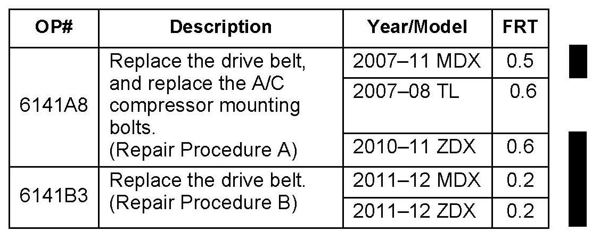
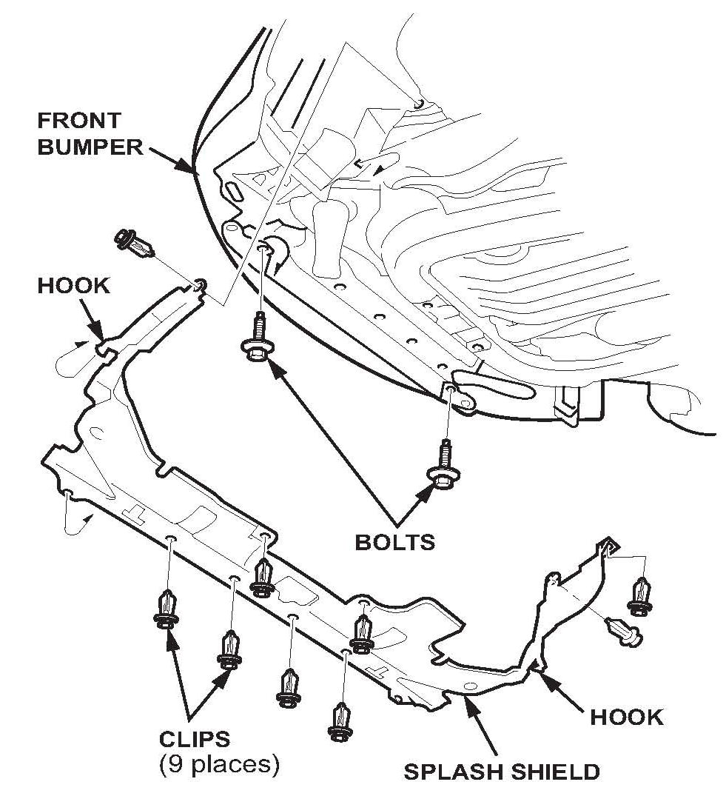
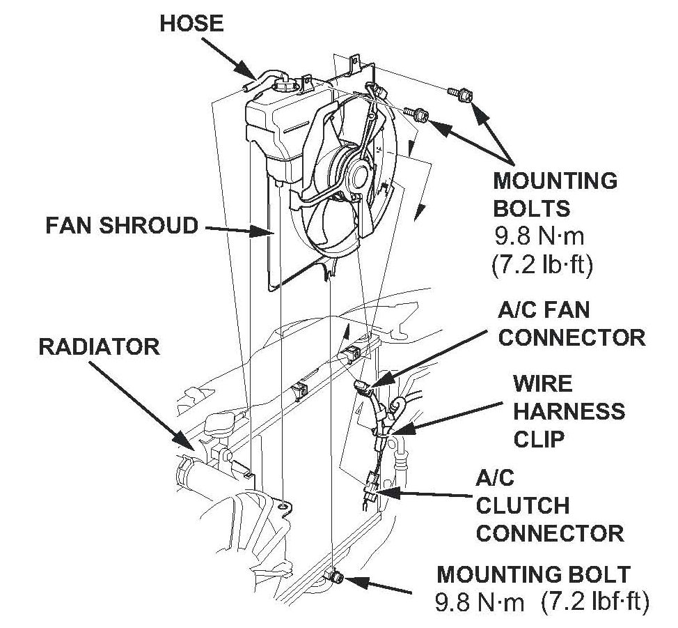
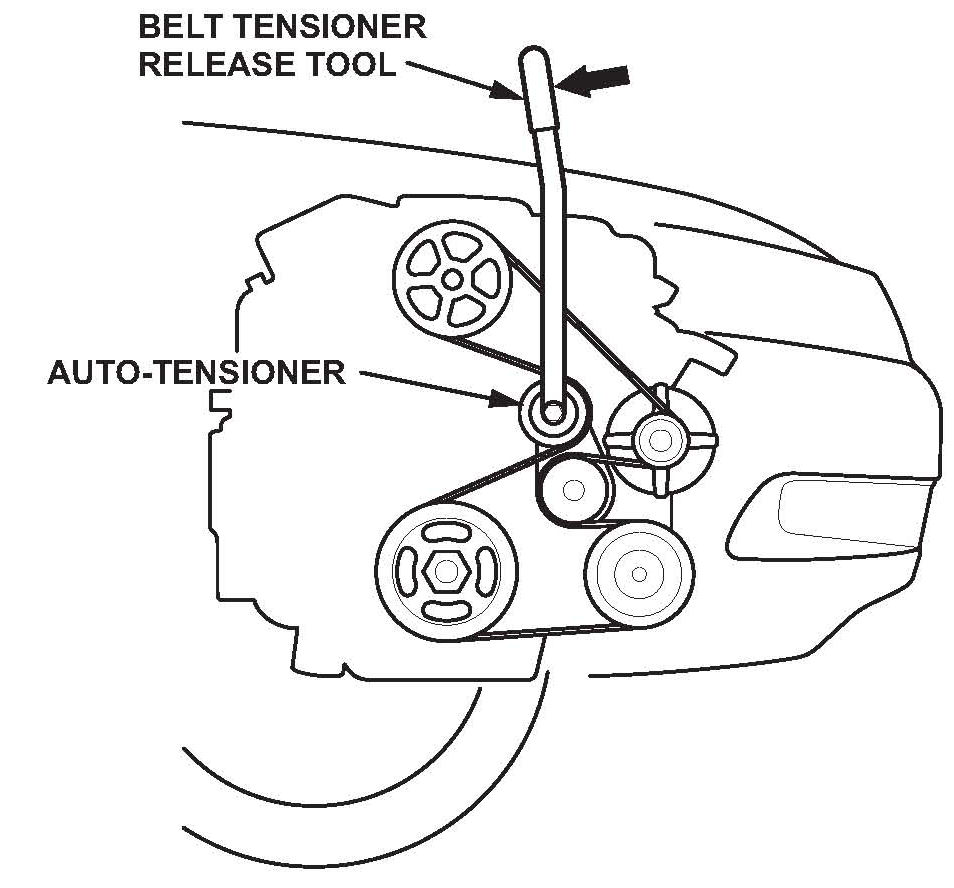
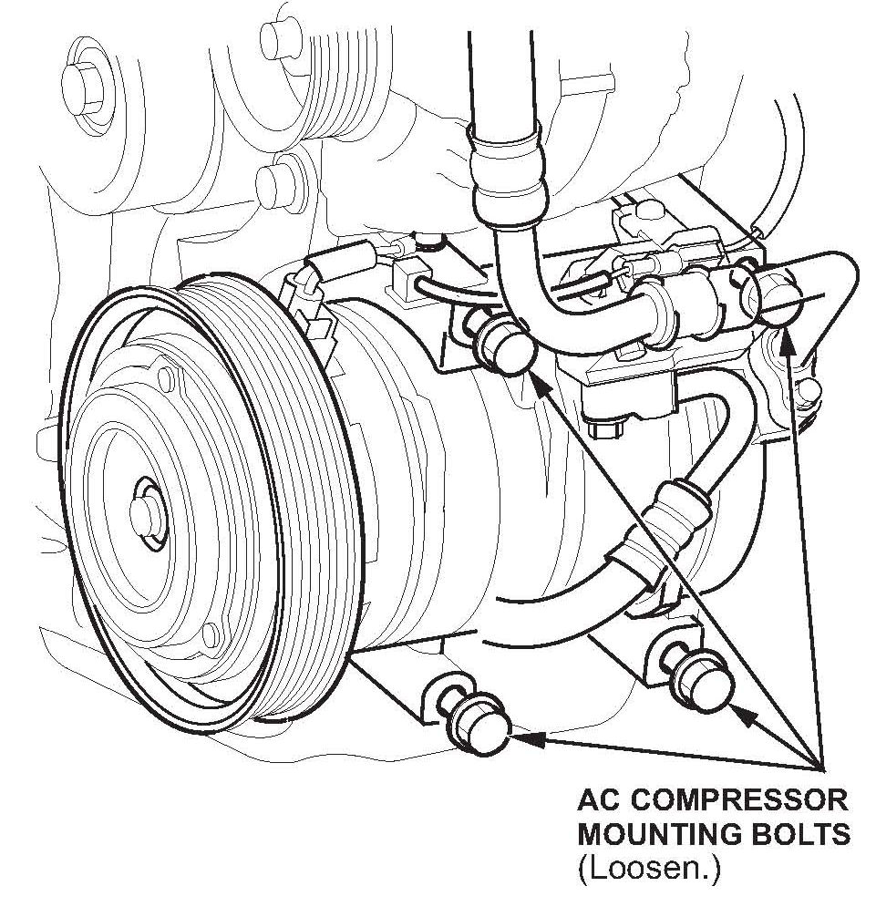
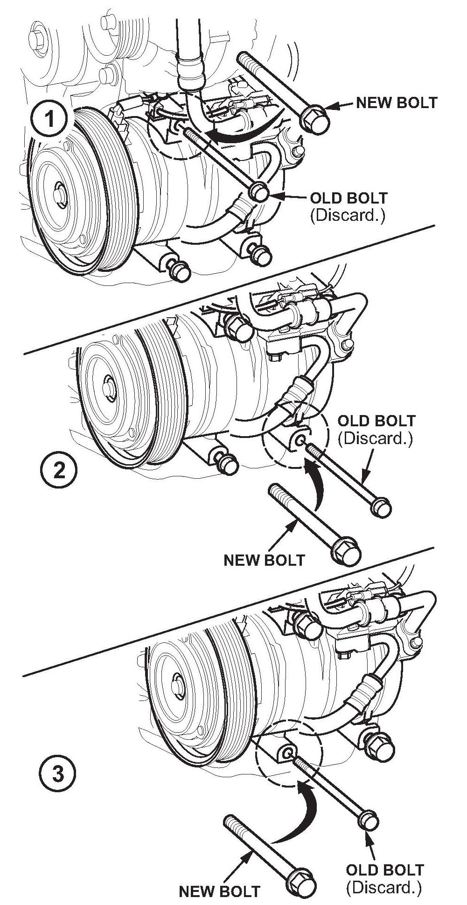
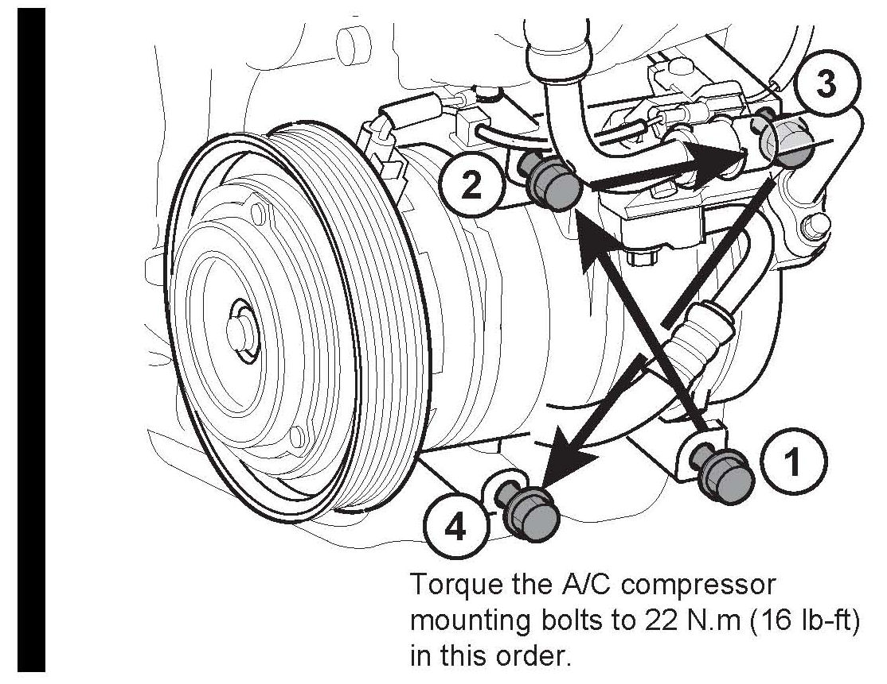
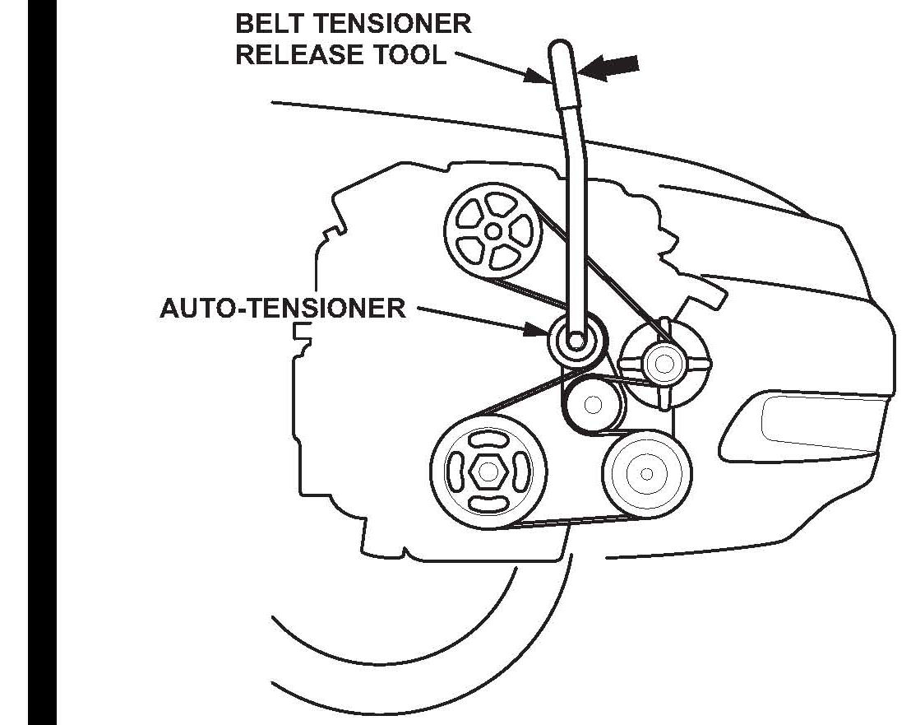

Engine - Drive Belt Squeaks On Cold Start Idle
10-035July 24, 2012
*Applies To:
2007-12 MDX - ALL
2007-08 TL-ALL
2010-12 ZDX - ALL*
Drive Belt Squeaks
(Supersedes 10-035, dated August 10, 2011, to revise the information marked by the black bars and asterisks)
REVISION SUMMARY
*^ Under CORRECTIVE ACTION and PARTS INFORMATION, ZDX was added.
^ Under WARRANTY CLAIM INFORMATION, the model information and the failed part number were changed.
^ Under REPAIR PROCEDURE A, ZDX was added and an illustration was added to step 10.*
SYMPTOM
The drive belt squeaks when the engine is started cold and then idled.
PROBABLE CAUSE
The construction of the drive belt and the alignment of the A/C compressor may cause the drive belt to create a squeaking noise when the engine is idling. This usually occurs when the engine is cold or first started.
CORRECTIVE ACTION
REPAIR PROCEDURE A:
Replace the drive belt, and install updated NC compressor mounting bolts.
*2007-10 MDX: ALL
2011 MDX: From VIN 2hNYD2...BH500001 thru 2HNYD2...BH512245*
2007-08 TL: ALL
*2010 ZDX: ALL
2011 ZDX: From VIN 2HNYB2...BH500001 thru 2HNYB1...BH512245*
REPAIR PROCEDURE B:
Replace the drive belt only.
*2011 MDX: From VIN 2HNYD2...BH512246 and Later
2012 MDX: ALL
2011 ZDX: From VIN 2HNYB2...BH500147 and Later
2012 ZDX: ALL*
PARTS INFORMATION
*A/C Compressor Mounting Bolts
(MDX - four required, TL - three required):
P/N 90023-R70-A00*
Drive Belt (Bando Belt): P/N 38920-RCA-A01
TOOL INFORMATION
Belt Tension Release Tool (Snap-on): T/N YA9317
WARRANTY CLAIM INFORMATION

The normal warranty applies.
*Failed Part: P/N 38920-RCA-A03*
Defect Code: 03217
Symptom Code: 04201
Skill Level: Repair Technician
DIAGNOSIS
Start the engine cold with the A/C on, and listen for the noise. If you don't hear the noise, try turning the A/C off. Compare the noise to the audio clip below. If needed, confirm the source of the noise by removing the drive belt and briefly restarting the engine.
REPAIR PROCEDURE A
*NOTE:
The TL is shown; the MDX and ZDX are similar.*
1. Raise the vehicle on the lift.
2. Remove the front splash shield:
^ Detach the clips.

^ Remove the bolts from under the front bumper.
3. Lower the vehicle.
*4. TL and ZDX only: Remove the A/C condenser fan shroud assembly:*
^ Disconnect the A/C condenser fan motor connector, and remove the harness clamp.
^ Loosen the A/C condenser fan shroud assembly mounting bolts.

^ Remove the coolant reservoir, then remove the A/C condenser fan shroud assembly.
5. If you did not remove the drive belt during DIAGNOSIS, remove it now.

6. Using the belt tensioner release too, move the auto-tensioner in the direction of the solid arrow to relieve the tension on the drive belt, then remove the drive belt.
7. Raise the vehicle on a lift.

8. Loosen, but do not remove, the A/C compressor mounting bolts.
* NOTE:
ZDX: Remove the 6x16 bolt and slide the suction hose clamp out of the way.
9. Replace the A/C compressor bolts with new bolts, one at a time. Tighten them finger tight. (TL shown)

NOTE:
^ MDX - Replace the four compressor mounting bolts as shown.
* ^ TL and ZDX - Replace three compressor mounting bolts.*

10. When you have replaced the bolts, torque them in a cross pattern to 22 N.m (16 lb-ft).
11. TL only: Reinstall the A/C condenser fan.
12. Reinstall the splash shield.
13. Install a new drive belt.
REPAIR PROCEDURE B

1. Using the belt tensioner release tool, move the auto-tensioner in the direction of the solid arrow to relieve the tension on the drive belt, then remove the drive belt.

Disclaimer